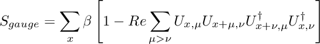

The Hila framework consists of
- the hilapp and
- a lattice simulation library.
Transformer contains a C++ preprocessing tool and framework for programming lattice field theory simulations: the main method for getting measurements from non-perturbative quantum field theories.
Lattice field theory simulations involve up to 4 dimensional grids whose points are updated continuously according to some Monte Carlo update algorithm. The update at each grid point depends on the data stored at neighboring lattice points, and the ideal update order depends on the parity of the lattice points. Efficient parallel implementations using MPI and GPU's can be quite complicated to implement, modify and debug. Some kind of simplification was clearly needed.
Transformer aims to make it easier for researchers to implement a broad class of these simulations by abstracting a lot of the technicalities involved, and by bringing the syntax from CUDA kernels and MPI calls to the essentials. The approach given here involves new datatypes and a preprocessing tool that converts c++ code with the new simplified syntax for loops and element accessors into working c++ code and gpu kernels.
Essentially, HilaPP extends C++ with statements of the following type:
The two latter statements are expanded into loops over all lattice sites and over EVEN sites, respectively. The ordering of sites in the loop is undefined.
HilaPP
Generating this documentation
Build the documentation (with the git hash as the version number) using
Compiling the HilaPP and using it on c++ code
In short, the framework can be used in these steps:
- Write c++ code using the syntax and datatypes laid out below
- Use the hilapp excecutable to convert this code into .cpt code
- Compile the new .cpt code into the final excecutable

To compile the hilapp, first create a build directory inside the main directory if it doesn't exist. Then, compile the hilapp by typing make in the main folder. This will create an executable called hilapp in the build folder.
You can then use it to compile an extended C++ file into standard C++ using
This will create a cpt file written in standard C++.
The cpt can be compiled with any c++ compiler, but must be linked against the headers and c++ files in the plumbing directory.
Check the example programs in the programs folder. You can use almost any standard C++ code, by there are a couple of new reserved names: the variable X and the function onsites(). In addition the framework defines a global lattice variable, which you should not overwrite.
In order to use the additional features for field type variables, you should inlude plumbing/field.h in you program. You can also include one or more of the files in the datatypes folder, which contains predefined datatypes that can be used to construct a field.
Using the Makefile system
Each of the example applications has a makefile for compiling the application with a given target backend. To compile it, run
The lower case target should be replaced by one of vanilla, AVX or CUDA. This will create a build directory and compile the application there.
An application makefile should define any target files and include the main makefile. Here is an example with comments:
Compiling on Puhti
There is a separate makefile for compiling hilapp on Puhti. To use it, run
This will link against the llvm installation in the hila development project folder.
Syntax - What works
Single line statements
You can operate on fields using statements like
On the left-hand side of the statement you should specify either [ALL] lattice sites, [EVEN] sites or [ODD] sites. The statement will apply only to this collection of sites. On the right hand side, use [X] to refer to this collection of sites.
You can refer to neighbouring sites by adding a Direction (e_x, -e_x, e_y, -e_y, e_z, -e_z, e_t, -e_t, ...):
You can also operate on fields directly,
This will operate on all sites and is equivalent to
General loops
Loops over all sites or a parity:
Inside the loop, refer to the sites using X:
As before, you can refer to neighbouring sites by adding a Direction:
What doesn't work (as expected)
Functions that implicitly depend on the site and return a number. For example
runs incorrectly with AVX. It does not actually run once for each site, but only once for each vector.
Extensions
HMC
Gauge field
The gauge field class is mainly a convenient wrapper containing a matrix field for each Direction. It allows us to refer to the gauge field as gauge_field<SUN> U rather than SUN U[NDIM], which is inconvenient to pass as a reference.
The gauge fields also contains a momentum field. Since fields are only allocated if necessary, this is not a large amount of data. Fundamental gauge fields can also store a copy of the gauge field for HMC.
Actions
Actions represent terms in the full action of a quantum field theory and are used to set up the HMC simulation. Each action implements at least
double action(): returns the current value of the actionvoid force_step(): calculates the derivative and updates canonical momentavoid draw_gaussian_fields(): draws random values for any gaussian fieldsvoid backup_fields(): make a backup of gauge fields at the beginning of HMCvoid restore_backup(): restore the original field from the backup if the update is rejected
For example, the gauge action represents the Wilson plaquette action

The fermion action represents the pseudo fermion action
![\[ S_{fermion} = e^{-\sum_{x,y} \chi_x^\dagger \left(\frac{1}{D^\dagger D}\right)_{x,y} \chi_y}. \]](form_1.png)
The Dirac operator can be any of the implemented Wilson Dirac operator, the even-odd preconditioned Wilson Dirac operator, the staggered Dirac operator or the even-odd preconditioned staggered Dirac operator. See operators below for more detail about how these and the matrix inversion are used.
At small mass it is often more efficient to split the fermion determinant
![\[ Z_{fermion} = \int d\chi e^{-S_{fermion}} = det\left( D^\dagger D \right) \]](form_2.png)
to
![\[ det\left( D^\dagger D \right) = det\left( (D + m)^\dagger (D + m) \right) det\left( \frac{ D^\dagger D }{(D + m)^\dagger (D + m)} \right) \]](form_3.png)
To use this, you need two actions, Hasenbusch action 1 and Hasenbusch action 2.
Integrators
An integrator updates the gauge fields and their canonical momenta keeping the action approximately constant. Two integrators are defined, the leapfrog and the O2 (aka Omelyan) integrators.
Integrators are constructed from an action term and a lower level integrator (or the momentum action on the lowest level). An integrator step updates the gauge field keeping the action approximately constant.
Integrators form a hierarchy, where lowest levels are run more often in a trajectory. The momentum action is also an integrator and forms the lowest level. Generally the force of the gauge action is fast to calculate and should be added second. The fermion action is the most expensive due to the inversion of the Dirac matrix and should be added on a high level.
The leapfrog integrator requires a single evaluation of the derivative of the action term and conserves the action to second order in the step size. The O2 integrator conserves the action to the third order in the, but requires two evaluations.
Full HMC
The full process of setting up HMC is
Operators
Operators are classes that define an apply(Field<type> input, Field<type> output) method. The method takes the a field and runs a transformation on it, returning the result in the output field.
The Wilson Dirac and staggered Dirac operators are defined in libraries/dirac. They implement the two most common lattice Dirac operators. These files also have the even-odd preconditioned versions of these operators.
The Dirac operators also have a dagger(Field<type> input, Field<type> output) method, which implements the conjugate of the operator.
The conjugate gradient operator calculates the inverse of the square of an operator applied to a vector
![\[ out = CG(D) in = \frac{1}{D^\dagger D} in. \]](form_4.png)
In is defined in libraries/dirac/conjugate_gradient.h
Note that the Hasenbusch preconditioned operator in libraries/dirac/conjugate_gradient.h is a utility class used in the Hasenbusch action.
Backends
Backends are primarily implemented in three places. First, in HilaPP, loop generation and loop function handling code is in the files hilapp/src/codegen_*.cpp. The code generation functions are called in backend_handle_loop_function and backend_generate_code.
In order to define a new backend, you should edit the two functions above, implement the code generation function and add any new files to hilapp/Makefile.
Second, in the library in the folders libraries/plumbing/backend_*. These implement field storage in (usually in field_storage_backend.h), any other necessary top level definitions in defs.h and possible an extension of the lattice class in lattice.h. These are included in libraries/plumbing/field_storage.h, libraries/plumbing/defs.h and libraries/plumbing/lattice.h respectively.
A new backend should implement at least the field storage class. The new file needs to be included in libraries/plumbing/field_storage.h.
Finally, libraries/platforms has a collection of makefiles, chosen by the ARCH flag in the standard Makefile. These include combinations of a specific system and a backend. New backend requires a new makefile that defines the necessary flags to produce and compile the correct code.
Testing
In the programs/test_cases folder you can find a collection of simple test programs. To test whether the translations work on the cpu, type:
This tests the transform, compilation and run process for the test_*.cpp files for dimensions from 1 to 4, and outputs the exit status of each step. If you're on a machine with GPU's, you can test the GPU transformations with:
OLD HILA README
Datatypes
- NDIM: number of dimensions, values 2,3,4 (TODO: NDIM=1?). Typically set in application Makefile
- Standard types:
int,int64_t,float,double(long double?) Hila provided basic types:
Complex\<S\>,Vector\<n,T\>,Matrix\<n,m,T\>,SquareMatrix\<n,T\>,Array\<n,m,T\>Here S is any standard type, and T includes S and Complex<S>. C++ or C standard complex types should not be used (not AVX vectorizable). See docs for functions/methods (TODO Doxygen docs)
- Special types:
Parity: enum with values EVEN, ODD, ALL; refers to parity of the site. Parity of site (x,y,z,t) is even if(x+y+z+t)is even, odd otherwise.Direction: conceptually unit vector with values±e_x, ±e_y, ±e_z, ±e_t(if NDIM==4). Implemented as an enum class. Can be used to index arrays of size NDIM.CoordinateVector: derived from Vector<NDIM,int>.Direction variable acts as an unit vector in vector algebra: (assume below NDIM=4)
Field access and traversal
The principal traversal of the lattice is with site loops onsites(Parity), and a special location identifier X (effectively a new keyword).
X can be used only inside site loops.
Access operation f[X] can be applied only to field variables, and has the type of the field element (in the case above mytype).
X has methods:
CoordinateVector X.coordinates(): CoordinateVector of the current siteint X.coordinate(Direction): coordinate to directionParity X.parity(): parity of current site
The assignment f[ALL] = 2 + g[X]; can also be done with f = 2 + g. The main difference is in sequencing: the first form goes through the lattice sites in one site loop, whereas the second stores the result of 2 + g to a temporary field variable which is copied to f (in this case std::moved). The site loop form is faster since it minimizes temporaries and memory accesses.
Because f[X] is of type field element, the methods defined for the element type can be used.
f[X].dagger() is ok, f.dagger() is not.
f[X] also serves as a visual identifier for a field variable access.
Other features:
Access field at a single point: f[CoordinateVector]. This can be used only outside site loops.
Input library
Class hila::input can be used to read parameters and other data for simulation programs. It matches key-value pairs from input files. As an example, if the file parameters.dat contains
it can be read (mostly) using the method input::get(std::string key):
- The method
input::get()above deduces the type to be read in from the expected return value. The order is fixed, the items (lines) cannot be swapped (TODO: should this be allowed?). If an error occurs (wrong keys or values), program exits with an error message. - Because the order is fixed, the keys don't really carry information for the program. However, they help to ensure that the values are as intended.
- The method
input::get()broadcasts the values to all nodes. They have to be called by all nodes simultaneously. - Method
input::get_value()has more options for synchronization and error returns. See documentation ininput.h
Check input and layout
The input files and the lattice layout can be checked with the commands (after the application program has been built)
This runs the program without initializing MPI, Cuda or other hardware features and exits at lattice.setup() before any large memory allocations are made. If the number-of-nodes argument is given, program reports how the node layout is done.
Example: if you built the hila_example program above, in directory hila/applications/hila_example the command build/hila_example check=32 checks the input file and the layout to 32 nodes.
Stale Instructions
Generating documentation
Build the documentation (with the git hash as the version number) using
Compiling the preprocessing tool and using it on c++ code
In short, the framework can be used in these steps:
- Write c++ code using the syntax and datatypes laid out below
- Use the hilapp excecutable to convert this code into .cpt code
- Compile the new .cpt code into the final excecutable

You can then use it to compile an extended C++ file into standard C++ using
This will create a cpt file written in standard C++.
The cpt can be compiled with any c++ compiler, but must be linked against the headers and c++ files in the plumbing directory.
Check the example programs in the programs folder. You can use almost any standard C++ code, by there are a couple of new reserved names: the variable X and the function onsites(). In addition the framework defines a global lattice variable, which you should not overwrite.
In order to use the additional features for field type variables, you should inlude plumbing/field.h in you program. You can also include one or more of the files in the datatypes folder, which contains predefined datatypes that can be used to construct a field.